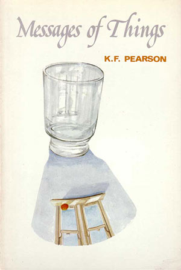

|
|


{kind=link}

{kind=link}
| .....marvellously
sensuous
poetry |
K.F. Pearson, in a collection that includes some of his well-known translations, writes a sensuous poetry with an irony that leaves intact his exotic imagery...
Pearson
offers us what Mark O’Connor
might regard as ‘open verse’,
except that it is too controlled and economic to allow self
indulgence... carefully delineated images, from which the reader must
make his own meaning.
John
McLaren, The Australian
Book Review
Poetic
precision in images so clean you can
hang them on a wall.
Geoffrey
Dutton, The Bulletin
Published 1984 (Friendly Street Poets)
ISBN 0949363030
63 pgs
$11.95
THE POMEGRANATE LYRICS
1.
A certain application of the casual
a pomegranate on my barest table collects attention to its autumn red. Its call upon the mind is absolute. It congregates attention like a lover. 2.
Awoken to the cynosure of quiet
I listen to the silence gathered round a pomegranate on a yellow book. Like abeyance of words before the softest kiss its compulsion to the ear is like a dawn. 3.
Imagine now a peacock spread its tail
beside a pomegranate and not eclipse the red and you will reach the rest at consummation. Accommodate them clearly in your mind. Each has come to entity like lovers. 4.
I have this morning calmly taken up
a pomegranate from my window sill, my hand enjoys a weight of given matter and fingers have a fruiterer’s fingers’ comprehension. They contemplate and wonder at the life. 5.
On my table, their common space
a pomegranate and a single rose has each its own propriety of red: they occupy the mind without contention and each has too the deepest red of all.
7 EPIGRAMS IN A FISCAL YEAR
For a hundred hands to touch you all at once tonight.
but that tumultuous is the sound of four hands stroking!
Then, what does it profit you any to maximize your gains if you suffer knowledge of damage in
your heart?
Desire for death without permanence, desire for life without pain! yet to desist from the golden
poison in the veins!
We’re born naked from the dark and go out naked in the dark, exchange
your coin for night that glints naked in the dark.
Demonstrate the lift and outcry of your person that opposite of cringe
is banners in the sky.
Hesitation is always at the edge for what will lie beyond, let
potential have capacity you put away your doubt.
Life! and you think you have always the rainbow lorikeets, but the
lights go out in the body, the lights go out all over.
| 3 VERSIONS OF SLEEP
1. A Formal Sonnet
When we
lie separate at verge of sleep
I remember my being entered you that well I’d have you remember our prow -ess of my cock and your clitoral tip whilst you are slipping down to sleep as well my love for I’d have entered you far in to reaches of the dream and have you moan as you have moaned your pleasure with me full -y and have your dreaming lips again pronounce and cry my name my name - oh I’d have done to you as you have done to me, made green my general drab and blue the sky for once to such effect I hear a deep song or know our times the origin of colour. 2. Morph.
They
are peas in a pod, almost, these svelte
perpetual striplings, although the one is paler, more gaunt-cadaverous I’d say, and dignified as hell beyond the other who has entered me that slow, that softly it was transfer of our minds: the look within his eyes and thorough smile! It must have happened there in our embrace his poppy-beads would touch against my face and with their scent drive all the pain away to somewhere else, outside myself I’d say. But consolation’s your most fickle queen for slipping off. Still I will be alright when the brother, old-young gaunt-cadaver, comes in to see what he can do and switches off the light. Sleep is good and Death is better, first rate is not to have been born at all. after Heine
3. Geography of Sleep
That was good then when the creatures
changed their souls and being at will. Now, in times of massive darkness, where is the flint of ancient dawns? But, then, for us, in these times was chosen the crying richness of a single thing, of sleep in which dream dwells, the liquor of vain endeavours. Because eternal, God remains himself and takes no other form. But wish well butterfly and eclipse,
wish well the creature, sad, unable
to be Apocalyptic angel who changes form in sleep or dream. after Cassiano Ricardo |
Imitation and Independence - Messages of Things
Elius Levin
Open Door, No. 6, 1985
Messages of Things
by Kevin Pearson is a refreshingly different collection. Regarded as
a ‘pioneer in Australian verse
translation’, Pearson
ably renders humour, love, metaphysics, philosophy, drama and colour in
language sensuous, lusty and terse, into a variety of forms - ghazals,
couplets, variations on Catullus epigrams or triptych
‘monologues’. Alternatively, in five poems he pays
homage
to Spanish poets Luis de Gongora, Francisco de Queuedo, Frederico
Garcia Lorca, Jorges Luis Borges, Cesar Vallego, Juan Ramon Jimenez, or
Spanish-American poets Ruben Damo, and Delmira Augustini by way of
translation or adaption. The influence of such poets imbue his language
and images with a richness and flavour denied much contemporary
english-speaking poetry..
The longest poem, ‘Catullan Variations’, employs the voice of a lover speaking and musing aloud. The lover uses the focus of the pet bird in the hands of the woman he desired to relate his love for this woman - when the bird is being caressed in her hands, the lover confesses he would like to be:
and when, the bird dies, the lover decries Death for inducing his woman to tears.
The poem further unfolds into seemingly unrelated stanzas concerning the lover’s talk of passion, jealousy, despair, a plea, the joy of desire, of comparison to the final declaration of love. These stanzas congeal as the lover's reflections and shifting states of mind.
In the seventh stanza of this fifteen stanza ‘drama’, Pearson injects unexpected colloquialisms. This enhances the ‘drama’ with the element of surprise and destabilisation or variation of the metre, and thus the texture, skilfully heightening the drama and colour overall.
Further drama is evinced in such work as ‘The Assassin, His Counsel’, which is an indictment of middle-class society as portrayed through the shifting series of an assassin’s mind states. Such work is contrasted with wry humour in ‘A Small Ode to Soap’ and ‘Oneliners for a New Lover’
In ‘Gamelan Voluntary’, Pearson philosophises on the nature of ‘is-ness’ and ‘as-ness’ as represented by the differing ‘gongs’ of the gamelan and their symbolic significance in the scheme of things:
A refreshing well-wrought contemporary book of poetry, well worth having in your collection for a second and third read.
The longest poem, ‘Catullan Variations’, employs the voice of a lover speaking and musing aloud. The lover uses the focus of the pet bird in the hands of the woman he desired to relate his love for this woman - when the bird is being caressed in her hands, the lover confesses he would like to be:
Budgie you beguile her time.
She plays with you against her breast,
you so desire her teasing way
of give and take with finger tip
you need to nip and sharply bite
her there; then she herself, my
golden one, has some dousing of her
ardour and solace from your plays
if I could only do the same,
have sorrow go and peace return!
She plays with you against her breast,
you so desire her teasing way
of give and take with finger tip
you need to nip and sharply bite
her there; then she herself, my
golden one, has some dousing of her
ardour and solace from your plays
if I could only do the same,
have sorrow go and peace return!
and when, the bird dies, the lover decries Death for inducing his woman to tears.
The poem further unfolds into seemingly unrelated stanzas concerning the lover’s talk of passion, jealousy, despair, a plea, the joy of desire, of comparison to the final declaration of love. These stanzas congeal as the lover's reflections and shifting states of mind.
In the seventh stanza of this fifteen stanza ‘drama’, Pearson injects unexpected colloquialisms. This enhances the ‘drama’ with the element of surprise and destabilisation or variation of the metre, and thus the texture, skilfully heightening the drama and colour overall.
Further drama is evinced in such work as ‘The Assassin, His Counsel’, which is an indictment of middle-class society as portrayed through the shifting series of an assassin’s mind states. Such work is contrasted with wry humour in ‘A Small Ode to Soap’ and ‘Oneliners for a New Lover’
You're narcotic as the chorus of
the night green frogs at Ubud,
...
Your behaviour is the underwater inventions of the others
You are modest as a heatwave and as outrageous as the surf.
‘Oneliners for a New Lover’
...
Your behaviour is the underwater inventions of the others
You are modest as a heatwave and as outrageous as the surf.
‘Oneliners for a New Lover’
In ‘Gamelan Voluntary’, Pearson philosophises on the nature of ‘is-ness’ and ‘as-ness’ as represented by the differing ‘gongs’ of the gamelan and their symbolic significance in the scheme of things:
firm as spidery tungsten coil,
tensile, shining, strong
the impossible singing of ‘is’ I gong and gong as ‘as’
...
as children skip or hopscotch in any pause of traffic;
as pelicans over the Coorong, lifting away from us
replicate in their line, ideas, traditions of distance,
...
as day is day is day for long as the day is long
...
Firm as spidery tungsten coil, I gong and gone my ‘is’
approximate as
an ‘as’
the impossible singing of ‘is’ I gong and gong as ‘as’
...
as children skip or hopscotch in any pause of traffic;
as pelicans over the Coorong, lifting away from us
replicate in their line, ideas, traditions of distance,
...
as day is day is day for long as the day is long
...
Firm as spidery tungsten coil, I gong and gone my ‘is’
approximate as
an ‘as’
A refreshing well-wrought contemporary book of poetry, well worth having in your collection for a second and third read.
Friendly Street Poets - Messages of Things
Frank Kellaway
Overland, No. 96, 1984
Messages of Things by K.F. Pearson is an impressive collection. It contains adaptations and translations from Catullus, Heine, Borges, Lorca, two sixteenth century Spanish, and two Spanish American poets. He invests them all with the color and texture of his own thought.
Some of the best poems are about objects and suggest that things are like mirrors, in the sense that the way we look at them and what we see are a reflection of what we are - thus the cycle ‘Self Portrait from Objects in a Room,’ of which I liked the last, ‘A Cigarette Paper,’ the best:
Small and frail as a cowrie
shell,
and twisted in discard,
a cigarette paper just holds
to the edge of the wicker waste basket
waiting a breath for its fall.
and twisted in discard,
a cigarette paper just holds
to the edge of the wicker waste basket
waiting a breath for its fall.
It’s like waiting a
breath for your fall but at times,
at times the sheer diagonal flight of a bird
across the upper rectilinear blue of your windowpane!
at times the sheer diagonal flight of a bird
across the upper rectilinear blue of your windowpane!
The love poems, of which ‘Catullan Variations’ and ‘Gaius Petronius at Night’ are the most interesting, are passionate and sensuous with many memorable lines:
If you dissemble
‘otherwise engaged,’ send apples
kissed by your round lips, and I will freely eat.
kissed by your round lips, and I will freely eat.
The dramatic poems, ‘Triptych Monologues’ and ‘The Assassin His own Counsel’ show a jazzy zest for contemporary language. In ‘Odysseus’ we are given a sense of the interpenetration of the past and present, of Odysseus still alive, as he is, in the twentieth century.
However in spite of its vividness and vitality, the collection seems to me to be marred bv freauent clumsiness:
Once I used to say, Call no man
happy who is not born dead
but now I stand before you, myself the felicitous man
but now I stand before you, myself the felicitous man
The last four words sound stilted and pretentious and jolt to a wobbly halt.
...I’d have you
remember our prow
-ess of my cock and your clitoral tip
-ess of my cock and your clitoral tip
The grammar is clumsy; cock and clitoral tip are words of conflicting sorts, one popular the other medical, which shout angrily at one another; the splitting of the word prowess is idiotic; the poem, which calls itself ‘A Formal Sonnet,’ is nothing of the kind.
However in spite of these, and other blemishes far too numerous for comfort, and perhaps that’s their intention, Messages of Things is interesting throughout, nearly always alive and vivid, with many real insights.
A Vintage Year for Our Poetry - Messages of Things
Geoffrey Dutton
The Bulletin, Vol. 106, No. 5429, 1984
It is good to see a collection from Kevin Pearson, whose verse has qualities of music and precision that are part of the essential heritage of poetry but often threatened with demolition in the name of development. In an elegy for David Campbell he writes ‘song is utter voice.’ There are two resonant poems about oranges that also state that proposition, while Pearson tackles its implications head on in ‘The Problem of Beauty’. One of my favourites is ‘A Smart Ode to Soap’, which has the same shining observation of aspects of the accustomed every day as in Les Murray’s poem about a hot shower.
Poetry from Friendly Street, Wollongong and the West
Barbara Giles
Australian Book Review, July 1984
Here again the biennial
crop from the
poets of Friendly Street, and the quality sustained, grant monies well
invested.
This year we have Rob Johnson’s first book [Caught on the Hop}, a first from Kevin Pearson [Messages of Things], Mike Ladd [The Crack in the Crib] and Jeff Guess [Leaving Maps], and Jenny Boult’s third [The White Rose and the Bath], though her first with Friendly Street...
In Kevin Pearson’s Messages of Things the appearance is rather of essences, epiphanies, and those mostly of natural things: objects of art: and of the problems of appearances, of beauty.
In a marvellously sensuous poetry, attuned to those Spanish poets whom he translates so well, he writes nevertheless with an edge of irony which removes his poetry from self-indulgence.
His ‘things’ don’t shout their meanings, it is for the reader to conspire with them to turn a pomegranate into a paean, a carnation into certainty.
The book contains a number of translations, from Spanish and Latin. We recognise their distinct voices, like and unlike the voice of Kevin Pearson, which is a precise, sober and joyous voice. We will recognise also in these poems the forms and subjects which please him also.
It is not possible, with a poet of such intensity to find lines, to be quoted in brief, which give enough of his flavour, playful, sensual, reflective by turns, a strong and individual voice.
Friendly poems - Messages of Things
Ash, Winter 1984
K.F. Pearson’s Messages of Things (Number 7 in the series) is quite different in approach [to Mike Ladd’s The Crack in the Crib]. Pearson is a poet who can take his personal lessons for granted and simply allow them to inform upon his current choice of perspective. Of all the poets reviewed here his is the most distinctive voice - his technique more original and his sources more complex. His approach to the everyday miracles of love and pain is illuminated not only by education and imagination but a conscious use of empathy which gets beneath the skin. His writing of something more than direct experience and the intelligence with which he does so entirely side-steps pretension. It is dangerous for an Australian poet to display evidence of any kind of love affair with the passionate but Pearson is able to charter the reefs involved by his careful structuring, judicious injections of irony and a certain sly humour. For example, in ‘Catullan Variations (II)’ Pearson undercuts his first verse evocations of sensuality, beauty and melancholy with humour and deliberate Ockerisms:
There are many pleasures in this book, exotica of image and subject not least among them. Pearson’s hard-edged lyricism startles with its accuracy. You see it in a poem such as ‘A New Pomegranate’
Where the sense of colour and light and the lusciously ripe is typically underlaid with awareness of subtle connections and incidental word play. Another side of Pearson’s work is the energy and intelligence of his associative abilities. The following is from ‘The Assassin, His Own Counsel’,
New, Rewarding Verse - Messages Of Things
Peter Lugg
The Canberra Times, 30 June 1984
These books [Robert Clark and Jeri Kroll (eds.), No. 8 Friendly St Poetry Reader, K.F. Pearson, Messages of Things, Jeri Kroll, Indian Movies] tempt one to believe that poetry publishing in South Australia is flourishing. Pearson’s Message of Things is one of a suite of five new books launched at the Adelaide Arts Festival in March...
Some of Kevin Pearson’s poetry appears in the Friendly St Reader. His poetry is cosmopolitan, with a special debt to themes and techniques employed by South American poetry. Indeed, many of the poems in Messages of Things are translations from Spanish, Latin and Italian. While many Australian poets freely borrow the forms and themes of recent US poetry, the impact of Spanish poetry is rare. While influence for its own sake is difficult to encourage, the study of other poetic lexicons can often broaden the interests of local writers.
As a result Pearson’s poems are sometimes alien and gaunt, sometimes rich and rococo. In ‘Catullan Variations’ he has wittily transformed the Roman poet into an Australian idiom. He is fond, too, of the epigram, although the form appears to become his master, rather than the reverse. Altogether I feel that there are too many translations in this book, and not enough Pearson...
Each of these three books has good layout and production.
Weekend Books - Poetry
Judith Rodriguez
The Sydney Morning Herald, 16 June 1984
Adelaide’s Friendly Street Poets sets an entrepreneurial example to other regional publishers, by launching its books at the biennial festival.
Numbers 6-10 are of high quality. All, with the exception of Jenny Boult’s The White Rose and the Bath, are first books.
With some exceptions in the work of Kevin Pearson and Rob Johnson, they agree in trying for an informal fluency that will carry minutiae of description, anecdote and explanation, on to a communicative whole. It is spoken poetry, but there are no raised voices, though Mike Ladd and Jeff Guess most obviously register earnestness. Several of the books use graphics - to best effect, Eric Chamber’s photos in Boult’s book, and fine pencil drawings by Ronnie Kelly in Guess’s Leaving Maps.
Kevin Pearson, in Messages of Things, typically has in his field of vision a still life and a reflection of and upon it. His feeling for poetic and philosophic tradition is appropriately expressed by his associating translations of Vallejo and Borges with Kevin Hart’s work in The Lines of the Hand. These and other poets are raising the difficult art of translating poetry to a level where Australian publishers will bring books of poetry, chosen and Englished by Australian sensibilities, to us from foreign literatures. Indeed, the Leros Press in Canberra has invited such manuscripts.
Messages of Things
Peter Armstrong
South Australian English Teachers Association, 1984
These are four of the five new titles in the Friendly Street Poets series which were launched during this year’s Writers’ Week. In its eight years of existence, the Friendly Street Poets group has grown to be a major force in the publication of new poetry in Australia.
Of these four books [The Crack In The Crib by MikeLadd, Messages Of Things by K.F. Pearson, The White Rose & The Bath by Jenny Boult and Caught On The Hop by Rob Johnson] K.F. Pearson’s Messages of Things is probably the most demanding of the reader. In many instances, there is an indefinable ‘I enjoyed reading it but can’t really say what I enjoyed about it.’ Sometimes it’s the sharpness of the image,
and
the intensity of the feelings portrayed,
the intellectual, and linguistic challenge,
or simply the pleasure of recognizing and perhaps envying the skill with which these poems are wrought.
I see a dual value in these books. As collections of contemporary poetry, and contemporary Australian poetry in particular, they are worthwhile and interesting additions to anyone’s book collection. Each book shows a high degree of craftmanship and imaginative skill with words. The poems reflect the writers, of course, and they reflect the society within which those writers are working. As a teacher, I have found contemporary collections such as these invaluable when placed at the heart of any serious study of Australian literature or society. If I were currently teaching Matriculation English, I would certainly introduce these books to my students as a possible area for extension work.
This year we have Rob Johnson’s first book [Caught on the Hop}, a first from Kevin Pearson [Messages of Things], Mike Ladd [The Crack in the Crib] and Jeff Guess [Leaving Maps], and Jenny Boult’s third [The White Rose and the Bath], though her first with Friendly Street...
In Kevin Pearson’s Messages of Things the appearance is rather of essences, epiphanies, and those mostly of natural things: objects of art: and of the problems of appearances, of beauty.
In a marvellously sensuous poetry, attuned to those Spanish poets whom he translates so well, he writes nevertheless with an edge of irony which removes his poetry from self-indulgence.
His ‘things’ don’t shout their meanings, it is for the reader to conspire with them to turn a pomegranate into a paean, a carnation into certainty.
The book contains a number of translations, from Spanish and Latin. We recognise their distinct voices, like and unlike the voice of Kevin Pearson, which is a precise, sober and joyous voice. We will recognise also in these poems the forms and subjects which please him also.
It is not possible, with a poet of such intensity to find lines, to be quoted in brief, which give enough of his flavour, playful, sensual, reflective by turns, a strong and individual voice.
Friendly poems - Messages of Things
Ash, Winter 1984
K.F. Pearson’s Messages of Things (Number 7 in the series) is quite different in approach [to Mike Ladd’s The Crack in the Crib]. Pearson is a poet who can take his personal lessons for granted and simply allow them to inform upon his current choice of perspective. Of all the poets reviewed here his is the most distinctive voice - his technique more original and his sources more complex. His approach to the everyday miracles of love and pain is illuminated not only by education and imagination but a conscious use of empathy which gets beneath the skin. His writing of something more than direct experience and the intelligence with which he does so entirely side-steps pretension. It is dangerous for an Australian poet to display evidence of any kind of love affair with the passionate but Pearson is able to charter the reefs involved by his careful structuring, judicious injections of irony and a certain sly humour. For example, in ‘Catullan Variations (II)’ Pearson undercuts his first verse evocations of sensuality, beauty and melancholy with humour and deliberate Ockerisms:
Let all of love go weeping now
and all who know of beauty
the budgie of my girl is dead,
the budgie who beguiled her time
she loved it more than both her eyes,
the honeyed thing knew her that wel1...
and all who know of beauty
the budgie of my girl is dead,
the budgie who beguiled her time
she loved it more than both her eyes,
the honeyed thing knew her that wel1...
There are many pleasures in this book, exotica of image and subject not least among them. Pearson’s hard-edged lyricism startles with its accuracy. You see it in a poem such as ‘A New Pomegranate’
Something now beneath
the burnished antipodal sun
flexible, gold, lithe
visible means of rapport
with the green-to-yellow
ripening pomegranate in
the dust of the white window
sill silence gathers round.
the burnished antipodal sun
flexible, gold, lithe
visible means of rapport
with the green-to-yellow
ripening pomegranate in
the dust of the white window
sill silence gathers round.
Where the sense of colour and light and the lusciously ripe is typically underlaid with awareness of subtle connections and incidental word play. Another side of Pearson’s work is the energy and intelligence of his associative abilities. The following is from ‘The Assassin, His Own Counsel’,
I am always at the edge.
The crunch is musk to my ear
my thumping adrenal high
is fluid as Fred Astaire.
Come here
I’ll take you there
you’ll hear the bullets tear
across the city square
to where the body slumps
and isn’t panic sweet
hit music to your ears
now you are its cause
and occasion in the streets?
Oh you’re
a big
boy now sweet
sweet contamination.
The crunch is musk to my ear
my thumping adrenal high
is fluid as Fred Astaire.
Come here
I’ll take you there
you’ll hear the bullets tear
across the city square
to where the body slumps
and isn’t panic sweet
hit music to your ears
now you are its cause
and occasion in the streets?
Oh you’re
a big
boy now sweet
sweet contamination.
New, Rewarding Verse - Messages Of Things
Peter Lugg
The Canberra Times, 30 June 1984
These books [Robert Clark and Jeri Kroll (eds.), No. 8 Friendly St Poetry Reader, K.F. Pearson, Messages of Things, Jeri Kroll, Indian Movies] tempt one to believe that poetry publishing in South Australia is flourishing. Pearson’s Message of Things is one of a suite of five new books launched at the Adelaide Arts Festival in March...
Some of Kevin Pearson’s poetry appears in the Friendly St Reader. His poetry is cosmopolitan, with a special debt to themes and techniques employed by South American poetry. Indeed, many of the poems in Messages of Things are translations from Spanish, Latin and Italian. While many Australian poets freely borrow the forms and themes of recent US poetry, the impact of Spanish poetry is rare. While influence for its own sake is difficult to encourage, the study of other poetic lexicons can often broaden the interests of local writers.
As a result Pearson’s poems are sometimes alien and gaunt, sometimes rich and rococo. In ‘Catullan Variations’ he has wittily transformed the Roman poet into an Australian idiom. He is fond, too, of the epigram, although the form appears to become his master, rather than the reverse. Altogether I feel that there are too many translations in this book, and not enough Pearson...
Each of these three books has good layout and production.
Weekend Books - Poetry
Judith Rodriguez
The Sydney Morning Herald, 16 June 1984
Adelaide’s Friendly Street Poets sets an entrepreneurial example to other regional publishers, by launching its books at the biennial festival.
Numbers 6-10 are of high quality. All, with the exception of Jenny Boult’s The White Rose and the Bath, are first books.
With some exceptions in the work of Kevin Pearson and Rob Johnson, they agree in trying for an informal fluency that will carry minutiae of description, anecdote and explanation, on to a communicative whole. It is spoken poetry, but there are no raised voices, though Mike Ladd and Jeff Guess most obviously register earnestness. Several of the books use graphics - to best effect, Eric Chamber’s photos in Boult’s book, and fine pencil drawings by Ronnie Kelly in Guess’s Leaving Maps.
Kevin Pearson, in Messages of Things, typically has in his field of vision a still life and a reflection of and upon it. His feeling for poetic and philosophic tradition is appropriately expressed by his associating translations of Vallejo and Borges with Kevin Hart’s work in The Lines of the Hand. These and other poets are raising the difficult art of translating poetry to a level where Australian publishers will bring books of poetry, chosen and Englished by Australian sensibilities, to us from foreign literatures. Indeed, the Leros Press in Canberra has invited such manuscripts.
Messages of Things
Peter Armstrong
South Australian English Teachers Association, 1984
These are four of the five new titles in the Friendly Street Poets series which were launched during this year’s Writers’ Week. In its eight years of existence, the Friendly Street Poets group has grown to be a major force in the publication of new poetry in Australia.
Of these four books [The Crack In The Crib by MikeLadd, Messages Of Things by K.F. Pearson, The White Rose & The Bath by Jenny Boult and Caught On The Hop by Rob Johnson] K.F. Pearson’s Messages of Things is probably the most demanding of the reader. In many instances, there is an indefinable ‘I enjoyed reading it but can’t really say what I enjoyed about it.’ Sometimes it’s the sharpness of the image,
Have a motionless apple rage
within its skin its hour
and
There’s an orange with
a recalcitrant skin,
the sting of liquid speargrass in your eye.
Then precisely in the pain you are alive.
the sting of liquid speargrass in your eye.
Then precisely in the pain you are alive.
the intensity of the feelings portrayed,
To desire and desire and attain
at the last
is the true Kosciusko of pleasure I reckon
the intellectual, and linguistic challenge,
Firm as spidery tungsten coil,
tensile, shining, strong,
the impossible singing of ‘is’ I gong and gong as ‘as’.
the impossible singing of ‘is’ I gong and gong as ‘as’.
or simply the pleasure of recognizing and perhaps envying the skill with which these poems are wrought.
I see a dual value in these books. As collections of contemporary poetry, and contemporary Australian poetry in particular, they are worthwhile and interesting additions to anyone’s book collection. Each book shows a high degree of craftmanship and imaginative skill with words. The poems reflect the writers, of course, and they reflect the society within which those writers are working. As a teacher, I have found contemporary collections such as these invaluable when placed at the heart of any serious study of Australian literature or society. If I were currently teaching Matriculation English, I would certainly introduce these books to my students as a possible area for extension work.